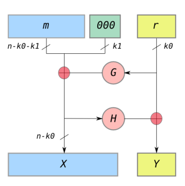

首先强推大神的文章：
（Note：里面有些图片要上梯子才能加载，chart.googleapis.com，你懂得）
RSA加密/解密
需要用到的数论知识
每个正整数n都能够被分解成多个质数的乘积
\[ n = p_{1}^{ a_{1} } p_{2}^{ a_{2} } \cdots p_{k}^{ a_{k} } \]
这个分解是唯一的。不过质因子的乘积顺序可以变。质因子可以重复出现。
全等关系式
当2个整数a、b的差等于k个整数n的积时（k可以是任意整数）:
\[ a - b = kn \]
可以写成：
\[a \equiv b (mod \ n) \]
例如a = 9，b = 1，n = 4时，有:
\[ a - b = 9 - 1 = 2 \cdot 4 \]
\[ 9 \equiv 1 (mod \ 4) \]
欧拉函数(Euler's function)
\[ \phi (n) = \prod _{k=1}^{ \infty } ( 1 - n^{k} ) \]
\( \phi (n) \)的含义是：在小于等于n的正整数之中，有\( \phi (n) \)个数与n构成互质关系。
这条公式深究起来是蛮复杂的。简单地去理解，其实是这么一个公式：
\[ \phi (n) = n ( 1 - \frac{ 1 }{ p_{1} } ) ( 1 - \frac{ 1 }{ p_{2} } ) \cdots ( 1 - \frac{ 1 }{ p_{k} } ) \]
\( p_{1} \ p_{2} \cdots p_{k} \) 就是上文说的质因数分解了。注意，这些质数是不能重复的，每个不同的p只会在\(\phi (n) \)公式里出现一次。
- 特殊情况1，当n为质数时，质因数分解得到1和n，1不算，那么\( \phi (n) \)简化成：
\[ \phi (n) = n ( 1 - \frac{ 1 }{ n } ) \]
\[ \phi (n) = n - \frac{ n }{ n } = n - 1 \]
- 特殊情况2，当n为2个质数p、q的积时：
\[ \phi (n) = \phi (pq) = (pq) ( 1 - \frac{ 1 }{ p } ) ( 1 - \frac{ 1 }{ q} ) \]
\[ \phi (pq) = ( p - \frac{ p }{ p } ) ( q - \frac{ q }{ q} ) \]
\[ \phi (pq) = ( p - 1 ) ( q - 1 ) \]
实例：
\( \phi (1) = 0 \)
\( \phi (2) = 2 ( 1 - \frac{ 1 }{ 2 } ) = 1，互质数为：1 \)
\( \phi (3) = 3 ( 1 - \frac{ 1 }{ 3 } ) = 2，互质数为：1、2 \)
\( \phi (4) = 4 ( 1 - \frac{ 1 }{ 2 } ) = 2，互质数为：1、3 \)
\( \phi (5) = 5 ( 1 - \frac{ 1 }{ 5 } ) = 4，互质数为：1、2、3、4 \)
\( \phi (6) = 6 ( 1 - \frac{ 1 }{ 2 } )( 1 - \frac{ 1 }{ 3 } ) = 2，互质数为：1、5 \)
\( \phi (7) = 7 ( 1 - \frac{ 1 }{ 7 } ) = 6，互质数为：1、2、3、4、5、6 \)
\( \phi (8) = 8 ( 1 - \frac{ 1 }{ 2 } ) = 4，互质数为：1、3、5、7 \)
\( \phi (9) = 9 ( 1 - \frac{ 1 }{ 3 } ) = 6，互质数为：1、2、4、5、7、8 \)
资料：
https://artofproblemsolving.com/wiki/index.php?title=Euler%27s_totient_function
https://www.geeksforgeeks.org/eulers-totient-function/
欧拉定理(Euler's theorem)
对于任意的互质的2个正整数a和n，都满足以下全等关系式：
\[ a^{\phi (n) } \equiv 1 (mod \ n) \]
证明：TODO
费马小定理(Fermat's little theorem)
这个是欧拉函数的特殊情况1的应用：若正整数n还是个质数，把n记为p，那么有：
\[ \phi (p) = p - 1 \]
代入欧拉定理公式，得到：
\[ a^{ p - 1 } \equiv 1 (mod \ p) \]
这就是费马小定理。
模逆元(Modular multiplicative inverse)
当2个正整数a和n互质时（Note：a、n本身不一定是质数），必然存在一个整数x，使得：
\[ ax \equiv 1 (mod \ n) \]
x就是所谓的模逆元。另外限定x取值范围为(0, n-1]，就使得模逆元x是唯一的。
x的存在性证明：
可以用欧拉定理来证明，因为a和n互质，所以有：
\[ a^{\phi (n) } \equiv 1 (mod \ n) \]
对左边转换一下：
\[ a\cdot a^{\phi (n) - 1 } \equiv 1 (mod \ n) \]
显然，模逆元x的其中一个解等于：
\[ x = a^{\phi (n) - 1 } \]
这个解可能会超过限定范围，得做模运算才能得到真正的模逆元：
\[ x = a^{\phi (n) - 1 } (mod \ n) \]
直接用这条公式计算x，据说比较慢，更快速的算法是用扩展欧几里得算法。
中文wiki有更详细的例子：扩展欧几里得算法。
RSA加密解密原理
准备
用户首先任意选择2个质数p、q，并计算p、q乘积n：
\[ n = pq \]
然后应用欧拉函数的特殊情况2公式：
\[ \phi (n) = (p - 1)(q - 1) \]
这2个值算出来时，就可以彻底删除p、q了。后面的计算步骤和原始的p、q无关。
接着，用户随机选择一个正整数e，e的取值范围为\( [1, \phi (n)] \)。
e确定后，计算关于\( e、\phi (n) \)的模逆元d：
\[ ed \equiv 1 (mod \ \phi (n) ) \]
此时，用户总共持有4个对象：
- \( n \)
- \( \phi (n) \)
- \( e \)
- \( d \)
其中的(e、n)组成了RSA算法的公钥；(d, n)组成了私钥。
现在举个栗子来理解上面的流程：
假设p、q分别为61、53，则\(n、\phi (n) \)分别等于：
\( n = 61 \cdot 53 = 3233\)
\( \phi (n) = (61 - 1) (53 - 1) = 3120 \)
e选择17（在范围[1,3120]内即可），并算出d：
\( d = 2753 \)
（用扩展欧几里得算法计算得到）
所以公钥为(17, 3233)，私钥为(2753, 3233)。
加密
假设用户A把公钥(e,n)给到用户B，让用户B给他发送一个原文信息m，m为一个数字。
原文m的加密过程如下：
\[ m^{e} \equiv c ( mod \ n) \]
用上面的例子来理解：假设m为65，公钥为(e,n)(17, 3233)，则有：
\[ 65^{17} \equiv 2790 (mod \ 3233) \]
密文c等于2790。
解密
解密流程就不太好理解了，先搬出公式：
\[ c^{d} \equiv m (mod \ n) \]
代入密文c 2790和私钥(d,n)(2753, 3233)，算出原文m：
\[ 2790^{2753} \equiv 65 (mod \ 3233) \]
这样就算出了原文m，是不是和变魔术一样。
分析小结
- 因为要对原文m做模n运算，意味着原文m是不能超过n的，不然取模前后的值是不一致的，就达不到加密解密效果
- 解决办法是对原文m切成多段m1、m2、m3，每一段都小于n，对每一小段加解密（分组加密）
- 另一种办法是，不直接用RSA对原文加解密，而是用别的对称加密算法如AES对原文加解密，RSA只用来加密AES对称密钥
解密公式的数学依据
前面的内容，并没有提到为什么以下这条公式可以保证解出原文m：
\[ c^{d} \equiv m (mod \ n) \]
这需要做一番推导才能理解。
首先，搬出加密公式：
\[ m^{e} \equiv c ( mod \ n) \]
从加密公式开始推导（以下等式都隐含\(mod \ n\)操作）：
\[ c \equiv m^{e} \] \[ c^{d} \equiv m^{ed} \] \[ c^{d} \equiv m^{1 + k(p - 1)(q - 1) } \] \[ c^{d} \equiv m\cdot m^{ k(p - 1)(q - 1) } \] \[ c^{d} \equiv m\cdot (m^{ (p - 1)(q - 1) })^{ k } \] \[ c^{d} \equiv m\cdot (1)^{ k } \] \[ c^{d} \equiv m\]
得证 \( c^{d} \equiv m (mod \ n)\)
其中不好理解的是第2行到第3行、第5行到第6行。
第2行到第3行的原理：
\[ ed \equiv 1 (mod \ \phi (n) ) \]
\[ ed = 1 + k\phi (n) \]
\[ ed = 1 + k(p - 1)(q - 1) \]
第5行到第6行的原理是欧拉定理：
\[ m^{\phi (n) } \equiv 1 (mod \ n) \]
\[ m^{ (p - 1)(q - 1) } \equiv 1 (mod \ n) \]
RSA算法的可靠性保证
公钥是(e,n)，私钥是(d,n)，攻击者唯一能知道的只有公钥(e,n)，那么攻击者是否能算出d，得到私钥(d,n)呢？
破解d的思路：
- \( ed \equiv 1 (mod \ \phi (n) ) \)，只有知道e和\(\phi (n) \)，才能算出d；
- 而 \( \phi (n) = (p - 1)(q - 1) \)，只有知道p和q，才能算出\(\phi (n) \)；
- 而 pq = n。只有对n做质因数分解，才能算出p和q。
所以，能否在短时间内对n做分解得到p、q，是RSA算法是否可靠的关键。目前来说，还没有快速地求质因数分解的算法。
针对RSA加密/解密的攻击问题
上面的加密解密公式：
\[ m^{e} \equiv c ( mod \ n) \]
\[ c^{d} \equiv m (mod \ n) \]
可以用函数R表达：
\[ c = R(m, e) \]
\[ m = R(c, d) \]
对于同一个RSA加密解密函数，输入同样的原文，就会输出同样的密文，这就给了攻击者可乘之机。攻击者如果观察到有2个密文是一样的，就有可能推导出关于此次通讯的更多信息。
解决办法是增加前后处理：
\[ c = R(preprocess(m), e) \]
\[ m = postprocess(R(c, d)) \]
这种前后处理方法被叫做padding schemes，但并不只是做padding。
这类方法最常见的是OAEP，optimal asymmetric encryption padding（1994年）：
OAEP-pre(m):
- r = random nonce
- X = (m || 00...0) XOR G(r) // pad m with zeros
- Y = r XOR H(X)
- output：m' = X || Y
OAEP-post(m'):
- split m' into X || Y
- r = Y XOR H(X)
- (m || 00...0) = X XOR G(r)
- output m
G、H是典型的某种加密学哈希函数。
综上，RSA-PAEP的加密解密公式如下：
\[ c = R(OAEPpre(m), e) = R(m', e) \]
\[ m = OAEPpost(R(c, d)) = OAEPpost(m') \]
wiki的这张图非常清晰地诠释了OAEP的处理过程：

参考资料：
RSA数字签名
RSA数字签名就是RSA加密的逆
签名过程，用私钥k加密原文m：
\[ c = R(m,k) \]
验证签名过程，用公钥解密密文c得到m'，验证m'是否等于m：
\[ R(c,K) == m \]
只有持有私钥的人才可以做签名，每个获得公钥的人都可以做验证。签名/验证签名的一个特点是，原文m是暴露的，没有秘密可言。
RSA签名的问题
原文m长度超过上限n
此时，可以对m做哈希，算出来的摘要控制在n长度内：
\[ c = R(H(m), k) \]
\[ c = R(s, K) == H(m) \]
里面H可以用上面的OAEP里的H算法。
然而这个流程也只是最简单的RSA数字签名方案，还有更完善的PSS。
RSA-PSS
RSA-PSS（Probabilistic Signature Scheme），基于概率的RSA数字签名方案。
参考资料
https://www.cs.cornell.edu/courses/cs5430/2015sp/notes/rsa_sign_vs_dec.php
https://blog.csdn.net/qq_34911465/article/details/78790377
https://pdfs.semanticscholar.org/b459/5fffe0562776a2830c7b525ba9f641110d7a.pdf
博主将十分感谢对本文章的任意金额的打赏^_^